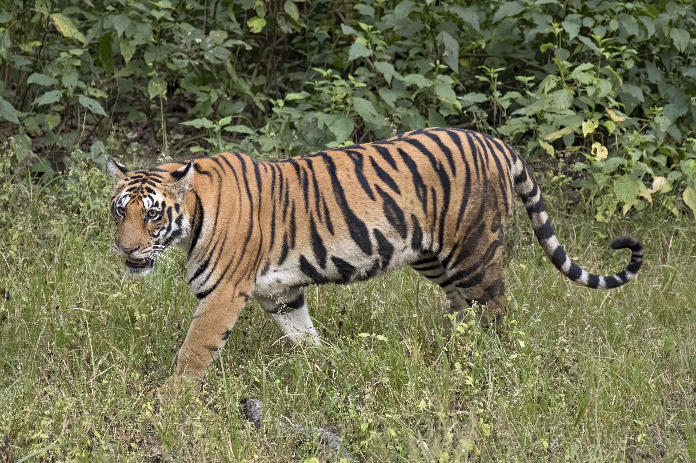

Tiger
Powerful striped big cats native to Asia.
- Species: Panthera tigris
- Diet: Carnivore
- Size: 3-3.5 ft tall
- Weight: 220-660 lbs
- Life span: 10-15 years
- Habitat: Forests, grasslands
- Found: Asia
- Can be pet: No
Trivia: Tigers are the largest cat species in the world.